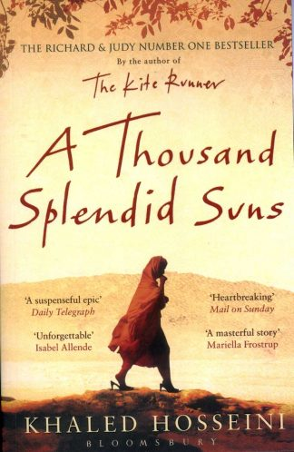

It was only a smile, nothing more. It didn't make everything all
right.
It didn't make ANYTHING all right. Only a smile.
A tiny thing.
A leaf in the woods, shaking in the wake of a startled bird's flight.
But I'll take it. With open arms. Because when spring comes,
it melts
the snow one flake at a time, and maybe I just witnessed the first
flake melting. - Amir

"It may be unfair, but what happens in a few days, sometimes even a
single day,
can change the course of a whole lifetime"
- 1965-born in Kabul Afghanistan
- 1976-Hosseini moved with the Family to Paris
- 2003-He published his first novel, the Kite Runner
- 2007-His secound novel was published A Thousand Splendid Suns
- 2013-His third novel "And the Mountains Echoed"
- 2018-He published a short Story "death of Alan Kurdi